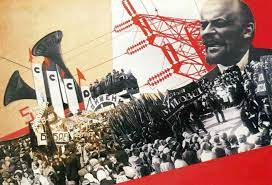

137. Illustration from The Result of the First Five-Year Plan. Varvara Stepanova. 1932 CE Photomontage.
- Form and Function
- Graphic art for political and propaganda purposes; a photomontage
- Red color dominates–the color of Soviet Union
- A large portrait of Lenin dominates; although deceased, his image is used to stimulate patriotism
- Masses of people below illustrate the popularity of the Five-Year Plan
- CCCP is a Russian abv. For the Soviet Union
- Context
- Stepanova was one of the main figures in the russian avant garde movement
- Influenced by Cubism and Futurism.